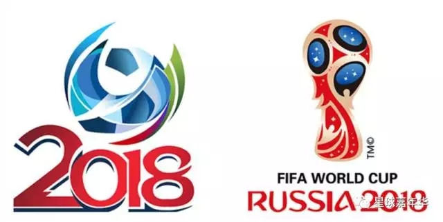

|
Copyright © 2018 FIFA World Cup· Privacy policy Accessibility at FIFA Send questions and/or comments to website editor. |
无论是球迷还是伪球迷，在世界杯面前，全部毫无抵抗力！世界杯不是看技术含量，不是看数据分析，仅仅是看球！看球！！看球！！！所以，在俄罗斯，在美丽的克里姆林宫下，一切的辉煌和黯淡，一切的荣耀和唏嘘，都包含在这一杯浓郁的伏特加里。别和我说巴萨，也别和我提皇马，在这里，只有葡萄牙，只有阿根廷。

这也许是最无聊的揭幕战，最弱的菜鸡互啄，能看睡着的揭幕战，世界杯的开局让人厌倦。中国球迷都在想，也许中国队来，也能击败俄罗斯，或者战胜沙特阿拉伯。然而两队却在揭幕战中踢了一个0比0。好吧，就让我们用低开高走来自我安慰吧。也许还不算太坏！而在A组中，没人能阻挡乌拉圭获得头名的脚步，东道主晋级？小组第二都已经算是幸运了。
和A组不同，B组的火爆在首轮就引发了全球性的大争论。C罗！没错，堂堂的皇马天王，首轮就染红被罚下，而且还是暴力侵犯了自己的俱乐部队长拉莫斯——当然，有关两人内讧的传闻已经演到了第25集。没有C罗的葡萄牙丢盔卸甲，干净利落输了个0比3。好在本组还有两只“弱鸡”摩洛哥和伊朗，葡萄牙才得以小组第二晋级。
C组的晋级没悬念，法国和丹麦高出一筹，而D组的阿根廷则和预选赛时期仿佛变了一支球队，梅西如日中天3场打入6球，阿根廷昂首头名晋级。所有媒体都在说，这将是一届“属于梅西的世界杯”。而梅西则始终拒绝接受采访——为了低调攒人品！
E组自然属于巴西，3战全胜无悬念和瑞士携手晋级。而F组除了德国一枝独秀外，其余三支球队争夺非常激烈。最后一轮的生死大战，埃尔南德斯的绝杀让墨西哥逃出生天，也为意大利复仇，瑞典只能遗憾出局。G组英格兰和比利时携手晋级，但英格兰多一个净胜球排名第一。而H组，神锋莱万3场0球，波兰作为种子队竟然垫底出局，让人遗憾。倒是日本队的表现出色，香川真司找回感觉，浅野拓磨更是把冈崎慎司挤到了替补席上。他们获得了小组头名，为亚洲足球争了光，而第二则属于拥有J罗、法尔考的哥伦比亚。
终于到了淘汰赛，这才是世界杯渐入佳境的开始！莫德里奇再强，也无法招架格列兹曼的帽子戏法，法国大胜挺进八强。葡萄牙和乌拉圭的闷战，C罗终于打入本届杯赛他的第一个进球，但一个进球也足够让葡萄牙送乌拉圭回家。俄罗斯这次没有好运相随了，西班牙没有给东道主面子，竟然疯狂打了一个5比0。而阿根廷和丹麦的比赛却一直拖入加时，梅西一粒点球，北欧童话在俄罗斯迎来完结篇。
巴西和墨西哥的比赛进球梅花间竹，直到第88分钟，保利尼奥才杀死了比赛。英格兰则2比0干净利落击败哥伦比亚，凯恩梅开二度。德国3比0大胜瑞士，3个进球竟然全部来自于后卫，分别是基米希、胡梅尔斯和博阿滕。日本和比利时顽强鏖战了120分钟，可惜点球大战库尔图瓦无解，日本惜败出局。
到了1/4决赛，剩下的8支球队已经全部是传统强队。俄罗斯世界杯拒绝冷门，开始了真正的巅峰对决。葡萄牙和法国的大战，是两年前欧洲杯决赛的重演。而最终的结果，却又是法国人落败。尽管姆巴佩开场就上演连过三人的进球致敬马拉多纳，但C罗随后点球+任意球梅开二度，尽管葡萄牙踢得丑陋，尽管若奥-马里奥还被罚下，但他们倔强晋级四强，无解！
巴西和英格兰的大战，让人们想到2002年世界杯上的对决。这一次笑到最后的却是三狮军团。内马尔的腿筋拉伤成为转折点，而最终头球破门绝杀的，却是后卫斯通斯。德国和比利时的相遇，是一场沉闷到极致的比赛。熬过120分钟，点球却罚到了第10轮。诺伊尔单掌救险，库尔图瓦抱头掩面。
西班牙和阿根廷的交锋精彩纷呈，梅西对面都是他在巴萨的老朋友。而在这场知己知彼的交锋中，梅西却表现得如鱼得水。尽管西班牙两度顽强扳平，但关键时刻梅西利用不擅长的头球破门，帮助阿根廷再度晋级半决赛。
半决赛的葡萄牙，似乎已经渐渐嗅到了冠军的味道。他们踢得功利而实用。反观英格兰，自1990年之后再度杀入世界杯的4强，他们拥有凯恩，拥有阿里，拥有斯特林，但却没有曾经的莱因克尔。威廉-卡瓦略一记重炮轰门，英格兰被挡在了决赛门外。葡萄牙人欣喜若狂，仿佛当年他们的祖先发现了新大陆。
德国和阿根廷的对决，这一次诺伊尔不用模仿莱曼小纸条的情节了。而和4年前巴西世界杯决赛的桥段不同，这一次比赛的胜负早早定下。阿根廷开场5分钟就送出一个2比0，这让德国人也出现了意志崩溃的情况。最终阿根廷连续两届杀入世界杯决赛，而勒夫在本场比赛之后宣布，他将在世界杯之后辞职。
万众瞩目的决赛在卢日尼基球场上演。葡萄牙和阿根廷的对决，这简直不能再完美！C罗和梅西，我们终于可以扯一扯皇马和巴萨了！当世两大球王，他们打破了所有可以打破的纪录，但他们都没有世界杯。这一次，谁能夺冠，谁就是无可争议的球王！
第39分钟，梅西任意球破门！王者就要加冕。第49分钟，C罗的射门虽然没有踢正，但却给贝纳尔多-席尔瓦制造了捡漏的机会扳平。第75分钟，本届杯赛最经典的时刻来临！C罗施展精彩的电梯球绝技，球击中横梁下沿弹出，但却打在飞身扑救的罗梅罗身上弹入网内，2比1！
随后的疯狂反扑，红色欢庆，蓝色落泪，梅西二度看呆世界杯，这一切都已经不再重要。谁也不会怪罪罗梅罗，谁也不会遗憾本届世界杯最后一个决定胜负的入球如此戏剧性。梅西获得了本届杯赛的MVP和金靴奖，他绝对无可争议。但最终捧起大力神杯的，却是C罗！
这是一届属于梅西的世界杯，这是一届属于葡萄牙的世界杯，重要的是，球王加冕，他是C罗！
|
Copyright © 2018 FIFA World Cup· Privacy policy Accessibility at FIFA Send questions and/or comments to website editor. |